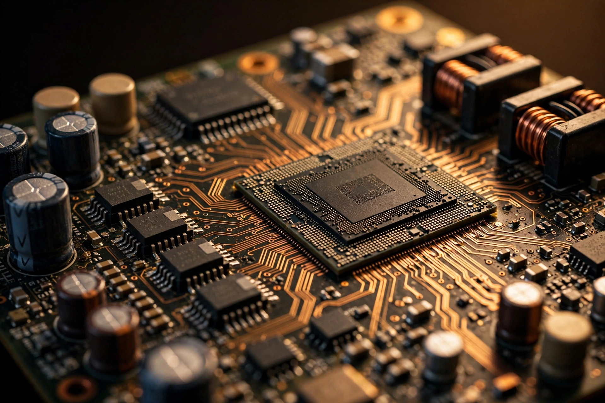

Thinking in Milliseconds: Stellantis Patents a Predictive Controller for Hybrids
A patent from FCA-US describes a hybrid control unit that fuses Kalman filtering with horizon prediction to erase the lag between torque commands and driveline response. Toyota perfected the hybrid powertrain; Stellantis wants to perfect the math around it.

Every modern hybrid has the same guilty secret. For all the talk of seamless electric assist, the transition between combustion and electric torque is still, underneath it all, a reaction. You press the pedal. Sensors notice. Signals travel. Controllers compute. By the time the electric motor answers, the moment it was answering to has already passed, and the driveline absorbs the difference as a tiny shudder you have been trained not to notice. A patent filing from FCA-US, Stellantis's North American arm, proposes something bolder: stop reacting. Predict.
CarBuzz surfaced the filing this week, and at its core is a control unit that "integrates Kalman filtering with horizon prediction techniques to effectively address time delay compensation" for hybrid powertrains. Read past the patent language and the idea is genuinely elegant. This controller does not wait to feel what the driveline is doing. It maintains a running estimate of what the driveline must be doing right now, projects that estimate forward along a prediction horizon, and issues torque commands for the world it expects to exist when those commands take effect. If it works, the electric motor stops chasing the engine. It meets the engine where the engine is about to be.
Start with the problem, because the patent states it unusually well for legal prose. "The presence of time delays, arising from task scheduling and communication latency between control units, can significantly hinder the effectiveness of advanced control algorithms. Closed loop performance is often limited by the equivalent time delay between the control action command, its effect on the system, and the measurement of the reaction. Frequently, commands and measurements originate from different sources, requiring precise coordination to accurately estimate the driveline response."
That paragraph deserves a slow read. It is not about slow signals: electrical signals travel at nearly the speed of light, and the patent knows it. That delay lives in the machinery around the signals: the engine ECU running its tasks on a fixed schedule, the hybrid controller on another schedule, the inverter on a third, each stamping its data with its own clock, each measurement arriving from a different source with a different age. Command, effect, measurement: three events in three places, and by the time the controller closes the loop, it is closing it on the past. In control theory, closing the loop on stale data does not just reduce performance. Past a point it inverts it, and the correction becomes the disturbance.
Why hybrids shake in the first place
To appreciate the fix, picture the crime scene. An internal combustion engine does not produce smooth torque. It produces a train of explosions, one per cylinder per cycle, and the output shaft sees every one of them as a pulse. At 2,000 rpm a four-cylinder fires about 67 times per second. Crankshaft, flywheel, transmission, and ultimately the wheels all ring with that fundamental frequency and its harmonics. Engineers have spent a century fighting this with hardware: dual-mass flywheels, torsional dampers, rubber engine mounts tuned like drum skins.
Hybrids add a second act: in a powersplit or CVT-style hybrid, the patent's stated target, there is no clutch to disconnect the engine from the wheels. When the engine starts mid-drive, its first combustion pulses travel through the planetary gearset straight to the driveline. Researchers at Shanghai Jiao Tong modeled this exact scenario and found what every hybrid owner has felt: "shuffles and jerks," severe torsional vibrations at the driveline's low-order modal resonances, right when the engine spins up through its natural frequencies. One elegant countermeasure, patented by Hyundai, extracts the vibration component of the engine's explosion stroke and commands the electric motor to produce an equal and opposite torque. In effect, the motor becomes an anti-noise speaker for the crankshaft. It works, but only as well as the controller knows what to cancel, and only as fast as it can command it.
That is the gap Stellantis is pointing at, because active cancellation is a brilliant actuator strategy running on a mediocre information strategy. If your estimate of the driveline state is 40 milliseconds old and your horizon is zero, you are playing whack-a-mole with physics. Predict instead.
The Kalman filter: knowing without seeing
Rudolf Kalman's 1960 filter is one of those ideas that quietly conquered the world. GPS receivers use it, spacecraft use it, and every self-driving prototype uses several. The premise is simple enough to state: you have a model of how a system evolves, and you have sensors that measure it, but the sensors are noisy and the measurements arrive late. The filter keeps a running prediction of the state, then corrects that prediction with each new measurement, weighting prediction against measurement according to how much it trusts each. Over time the estimate converges on something better than either source alone: less jittery than raw sensors, more grounded than blind simulation.
In the Stellantis patent, the filter's job is the unglamorous core of the whole scheme. Commands and measurements "originate from different sources," each with its own latency. Some sensor tells the controller what the engine did 20 milliseconds ago; another reports what the motor is doing now; the model predicts what both are doing between samples. The Kalman filter fuses these into one coherent estimate of the true driveline state, uncertainty and all. Without this step, prediction would be astrology: projecting forward from a position you never actually knew.
The horizon: commanding the future
Horizon prediction is the second half, and it is where the money is. Model predictive control, the formal name for this family of techniques, works like a chess player on a strict clock: simulate the system's behavior over the next N time steps, choose the sequence of torque commands that best smooths the driveline over that window, issue the first command, then repeat the whole calculation at the next tick. The horizon only extends a fraction of a second into the future, but a fraction of a second is an eternity at 67 combustion pulses per second. What matters is that the command issued now accounts for where the system will be when the command lands, not where it was when the sensors last reported.
Mitsubishi Electric Research Labs published the definitive survey of this approach in automotive use, and the hybrid energy management case is the flagship application. A hybrid powertrain is, at any instant, a power-balance equation with several actuators: engine, motor, generator, battery, each with its own response time and its own constraints. MPC handles that multivariable structure naturally, because it optimizes over the whole ensemble at once instead of bolting a separate controller onto each piece. The Stellantis filing narrows that general machinery onto one specific pain point: the time delay between command, effect, and measurement that limits closed-loop performance.
Consider what changes downstream: today, hybrid smoothness is achieved with calibration, thousands of hours of engineers tuning lookup tables until the transitions feel acceptable, tables that are correct for the conditions they were tuned in and approximate everywhere else. A predictive controller moves the work from the calibration bench to the compute budget. Tables shrink and the model grows. And the same controller that smooths a gentle engine restart also smooths the one on a cold morning at altitude with a half-charged battery, because it is solving the actual situation instead of interpolating the nearest tuned one.
The part nobody should skip
Now the ledger, because a patent is a press release with lawyers, and patent filings do not guarantee production. CarBuzz says so explicitly, because most control patents never leave the drawer. But the compute budget is real: MPC solves an optimization problem every control tick, and automotive ECUs are not workstations. Industry researchers flag calibration as the hidden cost, not the algorithm itself but the weights, covariance matrices, horizons, and solver tolerances that make it behave. Get any of them wrong and your predictive controller is worse than the dumb one it replaced. This is the kind of engineering that is easy to patent and hard to ship.
There is also an irony worth naming: the patent aims at hybrids "with no clutch available to disconnect the engine from the rest of the powertrain," which describes CVT and powersplit architectures. Stellantis's current hybrid lineup is built on P2 layouts, an electric motor sandwiched between the engine and the transmission, as in the 4xe Jeeps. So the company is filing control IP for an architecture it does not currently sell. Maybe a future product needs it; maybe it is defensive. Or maybe, and this is the reading I find most interesting, Stellantis looked at the hybrid landscape, saw that Toyota owns the powersplit hardware mindshare so completely that competing on hardware is a losing game, and decided to compete on the math instead. You do not have to out-Toyota Toyota's transmission; you have to out-think its controller.
One more honest note about the incumbent: the CarBuzz framing suggests Toyota's hybrids would feel crude next to this, and that is headline math. Toyota's e-CVT hybrids are already remarkably smooth, which is precisely why the patent's target matters: the remaining roughness is small, measured in milliseconds of latency and fractions of a Newton-meter, and the only tools that can see it are estimators and predictors. Smoothness is no longer a mechanical problem; it is an information problem. Stellantis is betting that the next leap in hybrid refinement comes not from better motors but from better knowledge of what the motors should do, issued slightly before they need to do it.
What I do not know
The ledger, stated plainly. I could not read the patent text directly; the USPTO publication server would not serve the document, so the technical claims above rest on CarBuzz's quoted excerpts, and any paraphrase of a patent is a game of telephone. No Stellantis vehicle or concept has been announced using this controller. No performance figures have been published: no latency reduction, no decibel improvement, no jerk metric. My computational feasibility argument is inference from the MPC literature, not a stated fact of the filing. And I have not driven a prototype, handled the hardware, or seen the controller run. What I can say with confidence is that the underlying theory is sound, the problem it targets is real and well documented, and the gap between patenting a predictive controller and shipping one is measured in years of calibration. Watch for it in Stellantis's next-generation hybrid announcements, or do not: most patents die in the drawer, and this one has not earned its future yet.
Still. Somebody in Auburn Hills wrote down, in a legal document, that reacting is not good enough anymore, and that much is worth writing down too. The hybrid's next refinement will be calculated, not calibrated.
| Spec | Stellantis predictive hybrid controller (as patented) |
|---|---|
| Applicant | FCA-US LLC (Stellantis North America) |
| Technique | Kalman filtering fused with horizon prediction (model predictive control family) for time-delay compensation |
| Problem targeted | Equivalent time delay between control command, its effect on the driveline, and measurement of the reaction; commands and measurements originate from different sources with different latencies |
| Control objective | Match electric motor torque to engine torque pulses; reduce driveline shock during engine start/stop and torque transitions |
| Target architectures | Standard and plug-in hybrids with no disconnect clutch (CVT/powersplit style); applicable to a degree on geared transmissions |
| Prior art context | Active vibration cancellation via antiphase motor torque (e.g., US9527503B2); MPC for hybrid energy management (Di Cairano & Kolmanovsky, MERL) |
| Computational notes | Optimization solved per control tick; calibration burden (weights, covariances, horizons, solver tolerances) is the practical cost |
| Production status | Patent only; no announced vehicle application; no published performance figures |
| Not published | Full patent text independently verified, latency/NVH improvement figures, ECU compute budget, production intent |
Sources
- CarBuzz, "Stellantis Has A Hybrid Engine Solution That Could Make Toyotas Feel Like A Busted Truck," September 11, 2026. https://carbuzz.com/stellantis-patent-hybrid-engine-control-september-2026/
- Jianwu Zhang, Donghao Liu, Defeng Xu, Haisheng Yu, Benben Chai, "A control strategy for a smooth engine start in a power-split hybrid electric vehicle," EVS30. https://papers.evs30.org/download.php?f=papers/EVS30-10320657.pdf
- "Torsional Vibration Characterization of Hybrid Power Systems via Disturbance Observer and Partitioned Learning," Energies 18(11):2847. https://www.mdpi.com/1996-1073/18/11/2847
- US9527503B2, "Active vibration reduction control apparatus and method of hybrid vehicle." https://patents.google.com/patent/US9527503B2/en
- Stefano Di Cairano, Ilya V. Kolmanovsky, "Automotive Applications of Model Predictive Control," MERL TR2018-213. https://merl.com/publications/docs/TR2018-213.pdf
- Alberto Bemporad, "Model Predictive Control: A Rising Technology in the Automotive Industry," CCTA 2020. http://cse.lab.imtlucca.it/~bemporad/talks/ccta2020/bemporad-ccta2020.pdf